PONY | Stool
Inspired by the short, sturdy legs and balanced proportions of a pony, PONY reinterprets its compact and stable form in a functional stool.
Its simple silhouette emphasizes a sense of solidity while maintaining a playful character.
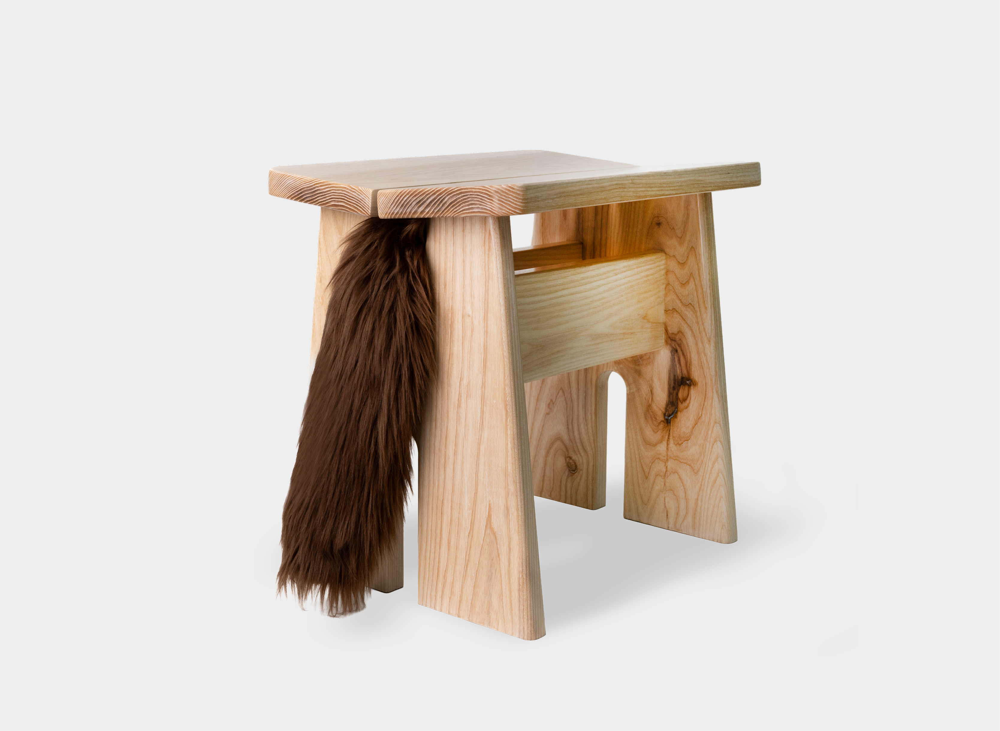
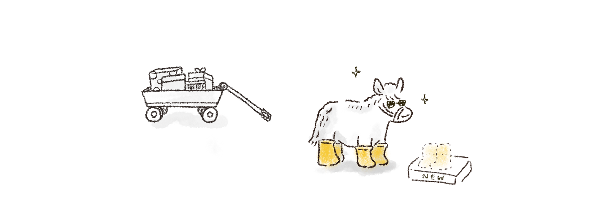
Ponies are sturdy and dependable, yet full of playful energy. Their compact bodies and short legs give them a grounded stance, while their soft tails add a touch of character and charm. These contrasting qualities inspired a stool that balances solidity with a mischievous spirit.
PONY brings the character of a pony into furniture through a sculptural form and tactile details.
A furry tail and playful, fur-covered stool socks add unexpected touches of humor, turning a functional seat into a little character that brings joy to everyday spaces.
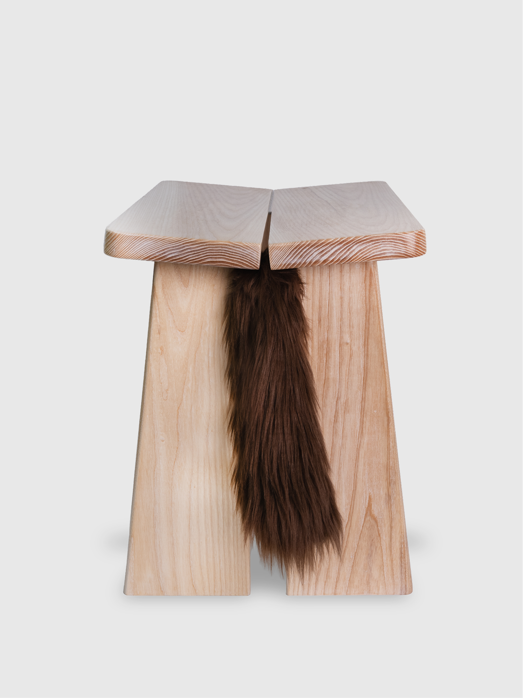
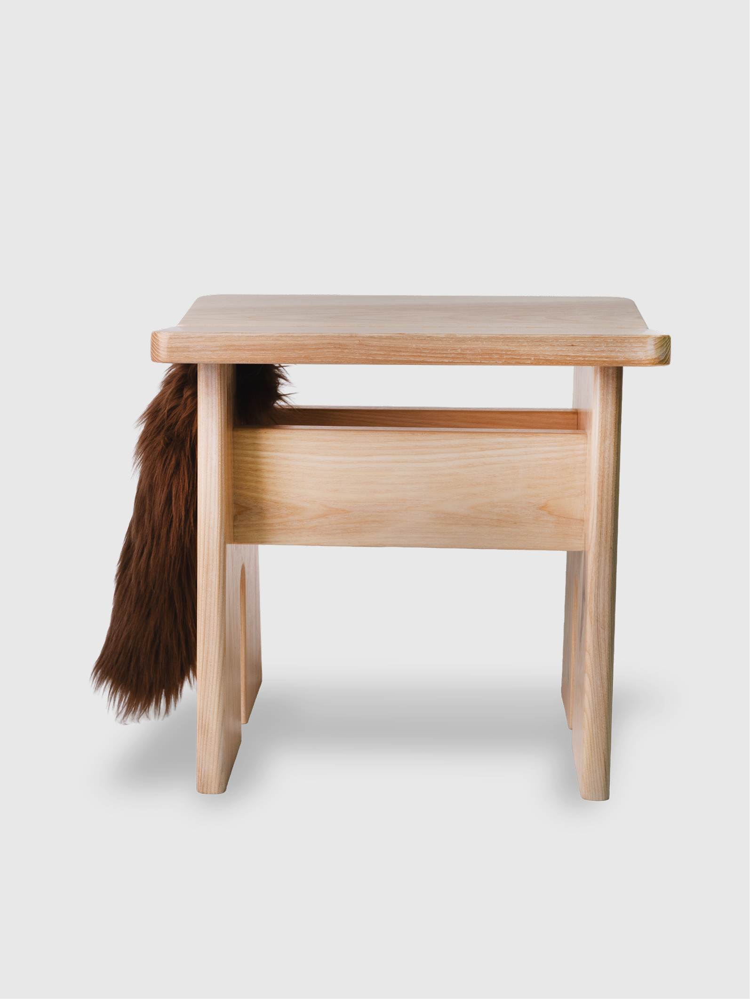
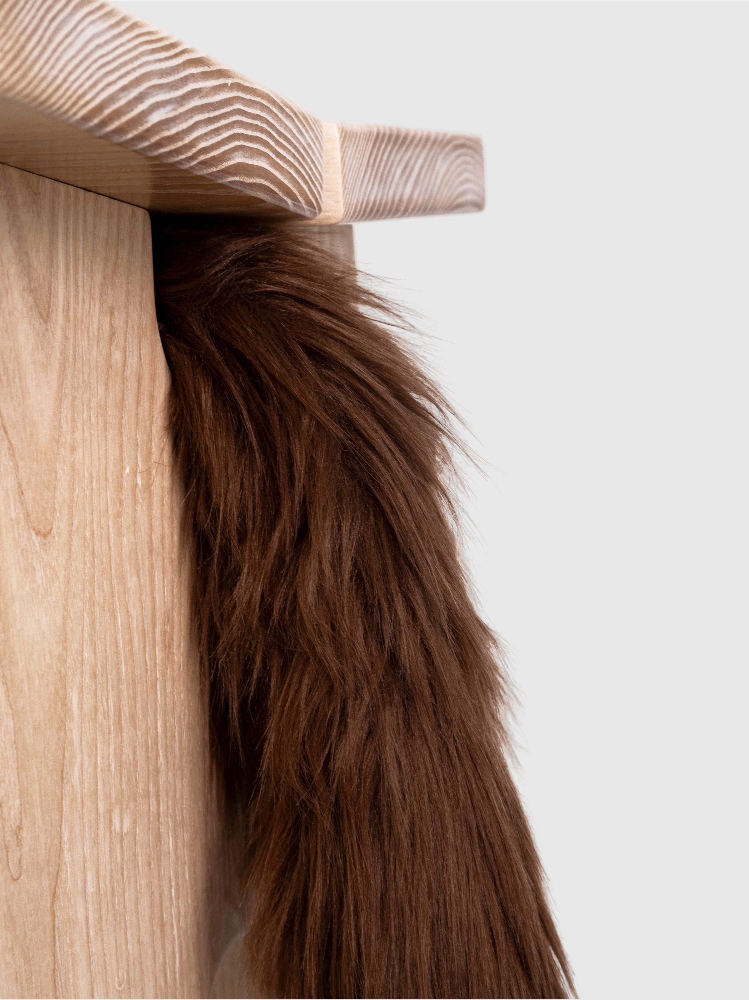
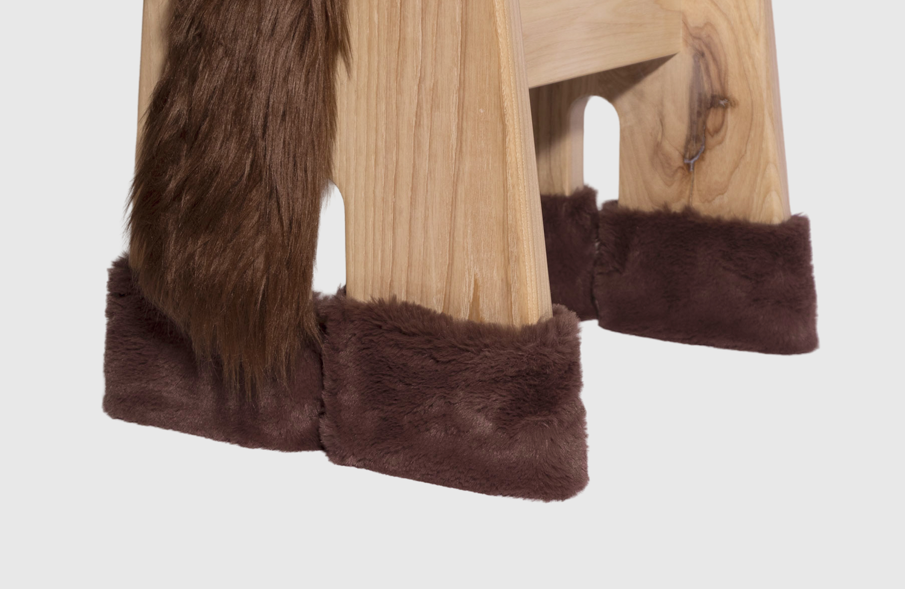
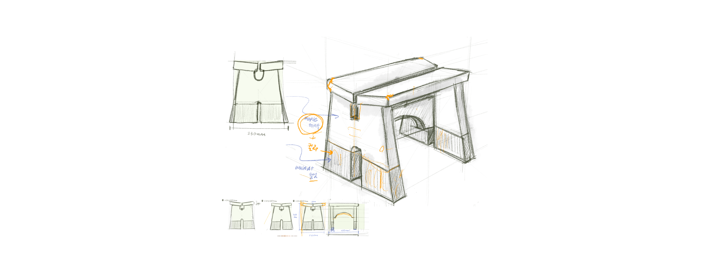
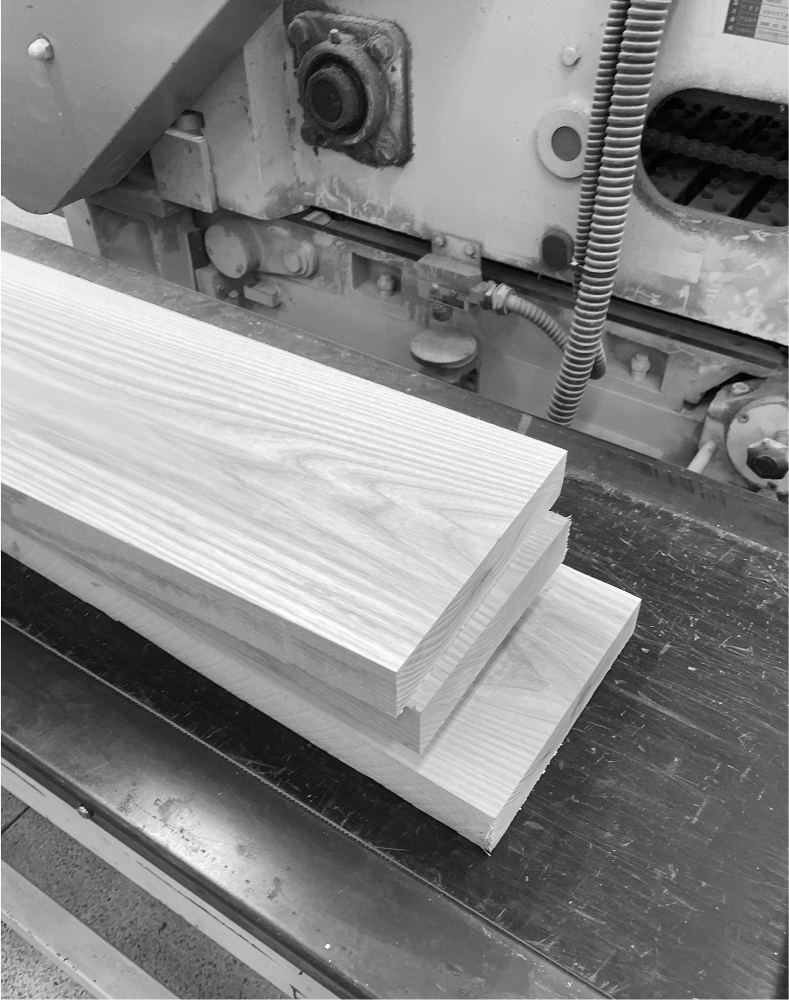
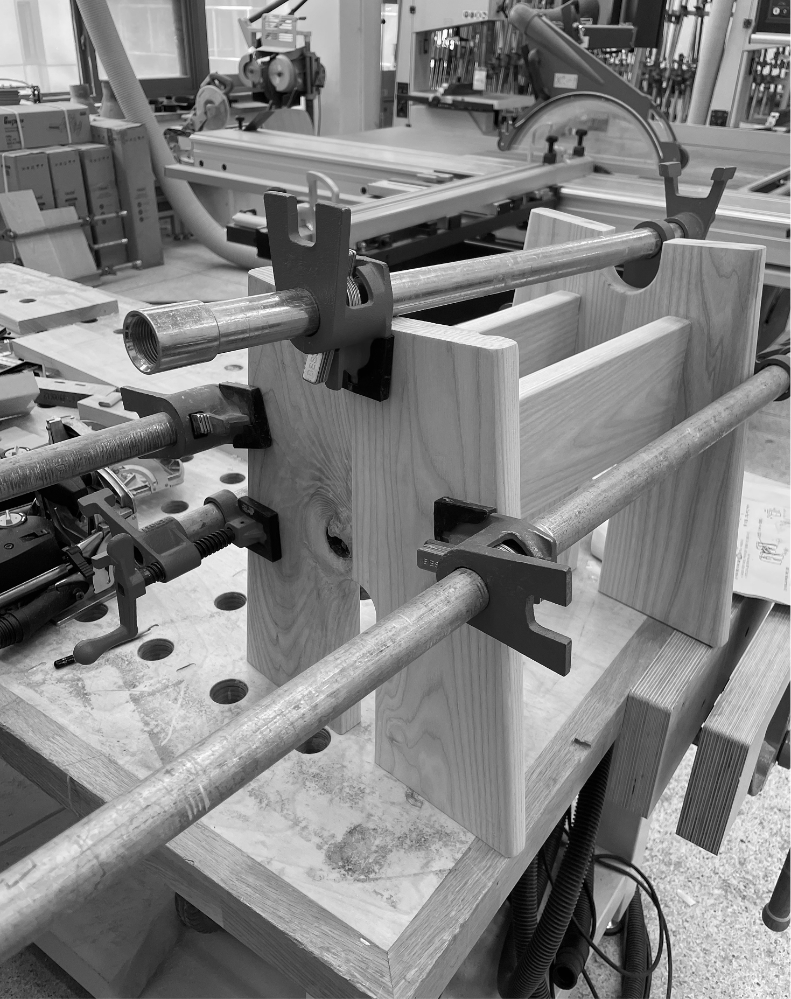
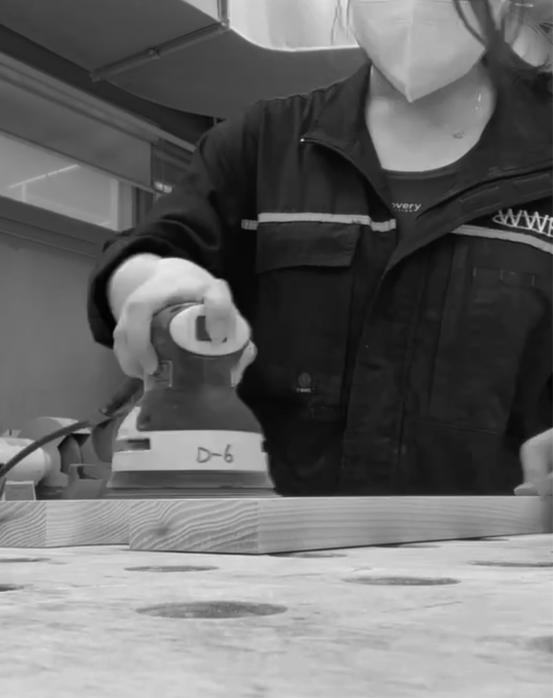
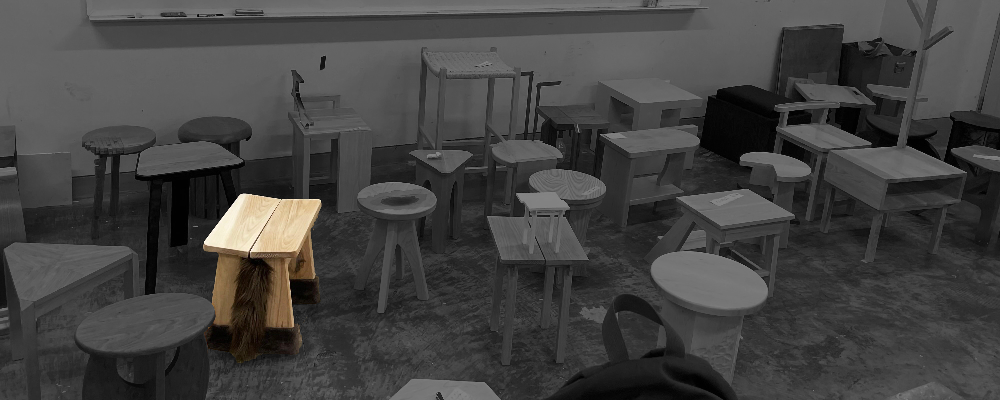